problem: temperature on top of the Attocube stack is high (~25K) for Ne deposition
made several attempts to lower the temperature (adding copper braids)
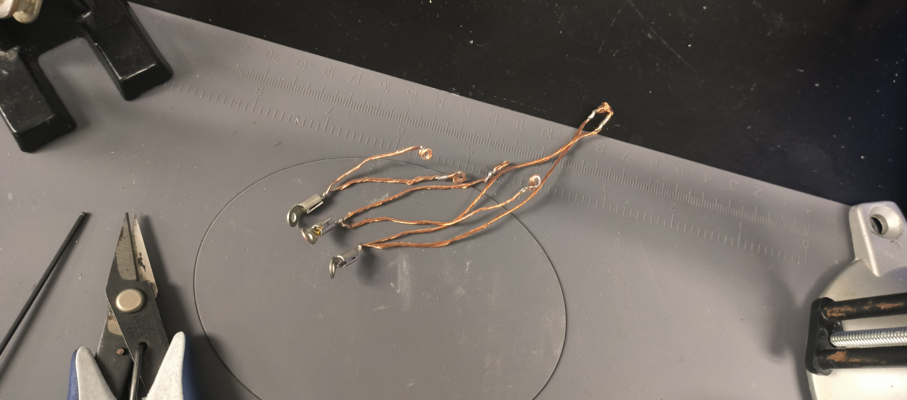
manually made copper braids
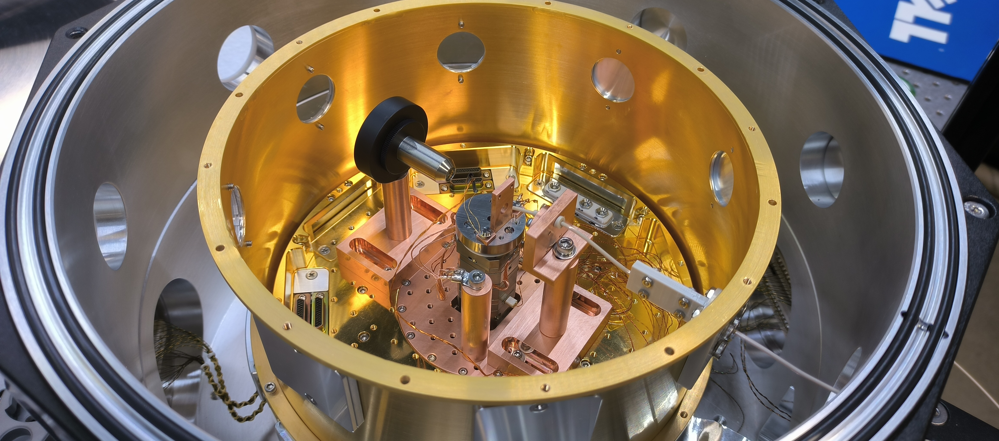
setup with copper braids (1)
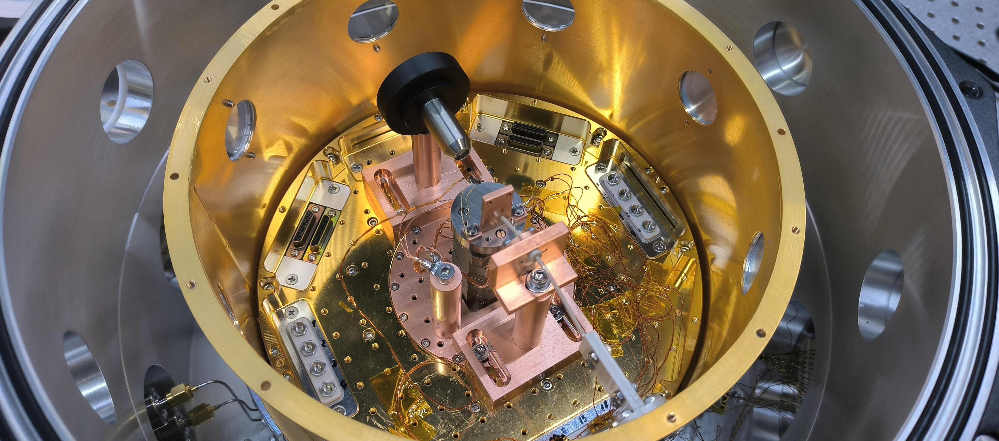
setup with copper braids (2)
this configuration allowed us to lower the temperature up to 13K, but the rotational movement was limited to about 90°, which is not sufficient for the proposed optical setup. Although the braids connected to the rotor are very thin
as even very thin copper braiding could prevent the stage from rotating, the idea is to try manufacturing a new copper base plate for the rotator with holes for the copper braiding. The new copper base plate could be thermally insulated from the XYZ-stack by a PEEK plate
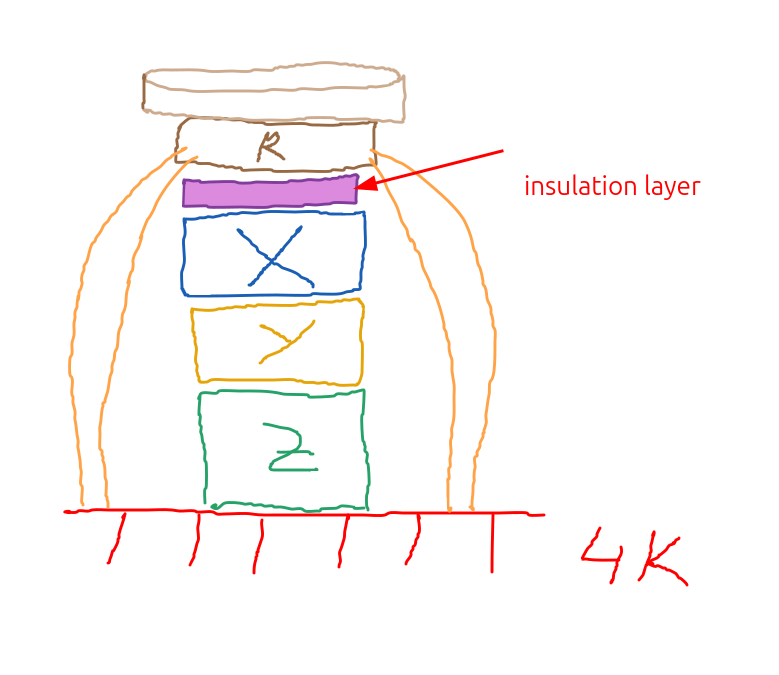
machined copper plate
CAD model of the new plate
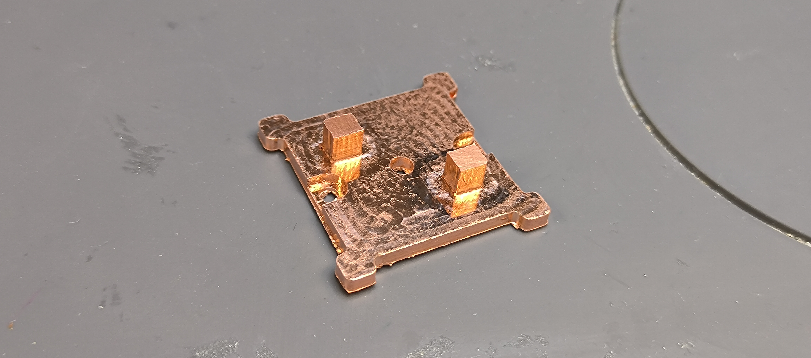
machined plate using lab CNC
an order has been placed in an outsourcing CNC company
measured temperature of different positioners in the stack at different conditions. Used varnish and capton tape to mount temperature sensor (Cernox)
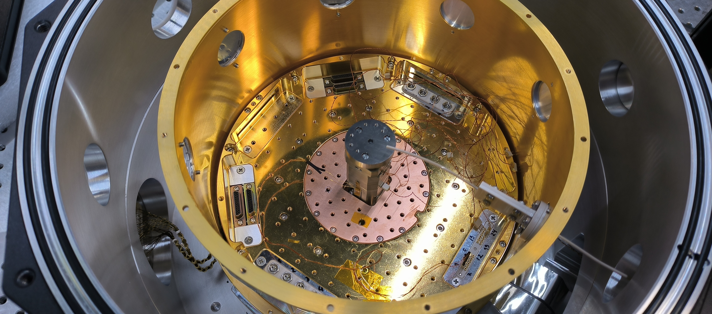
z-stage temperature measurment
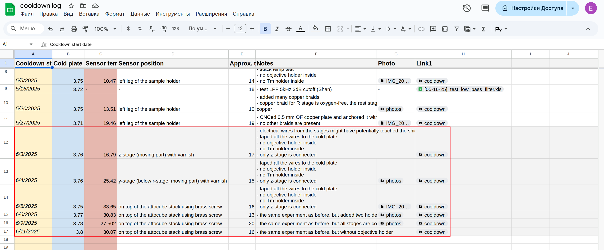
log file of cooldowns
the phase composition of the removed material strongly depends on the laser fluence
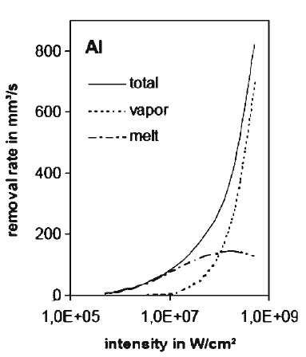
material removal model calculated for Al
laser beam interacting with matter could lead to extraction of atoms, clusters and even droplets from the target material. These
generated particles heave an initial speed that could reach values of tens of kilometers per second but is gradually decreasing while interacting with ambient atmosphere
fundamental criteria for choosing certain irradiation conditions for high quality ablation of a given material consists mainly of relation between the ablation rate and the thermal and optical penetration depths
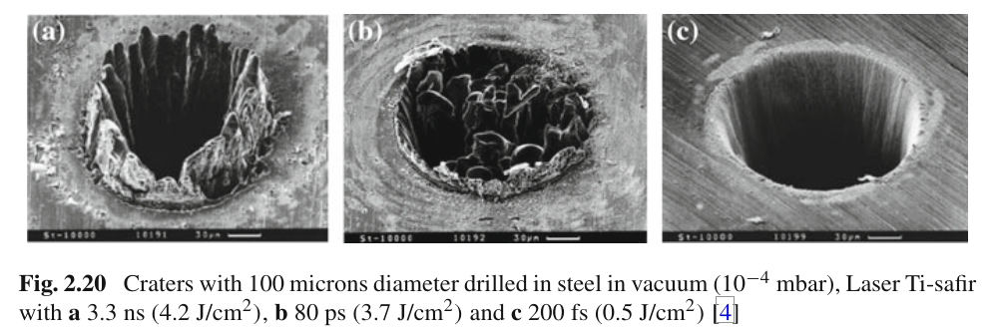
craters with 100 microns diameter drilled in steel in vacuum
for the ns and ps pulses the image indicates the presence of the molten material around the crater whereas for the fs pulses there is no evidence of molten material but only a vapour dust ring around the crater
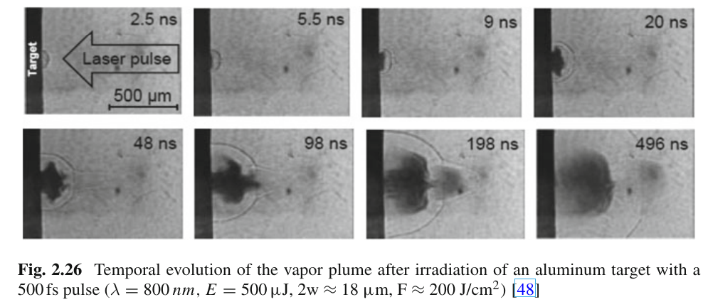
temporal evolution of the vapor plume after irradiation
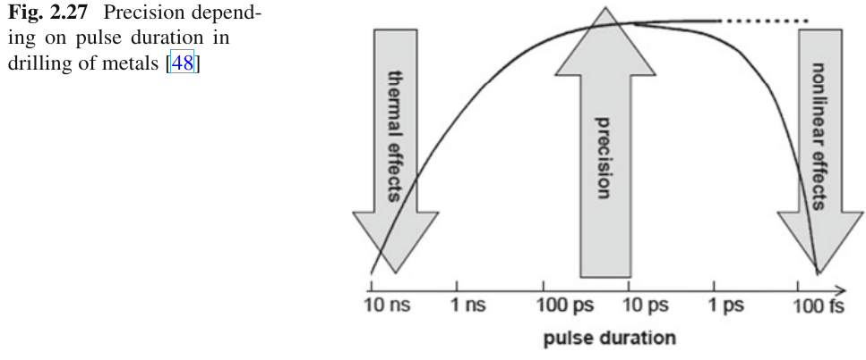
precision depending on pulse duration
physics of the ablation process is complex, given that it involves laser-solid interactions, the vapour/plasma formation and expansion, and the laser-plasma interaction
femtosecond and picosecond laser pulses can be considered as a direct solid-vapour transition
in nanosecond laser heating of metals the absorbed laser energy first heats up the target to the melting point and then to the vaporization temperature. In
this case evaporation occurs from the liquid metal, and heat conduction into the solid target is the main source of energy loss
in a metal, the free electrons absorb energy from the laser and at femtosecond time scale the energy is re-distributed among the electrons by
electron-electron collisions leading to the thermalization of the electron gas
the energy exchange between electrons and the lattice is governed by electron-phonon collisions and will last much longer (typically a few tens of picoseconds) than the thermalization of the electron gas due to the large mass difference of electrons and phonons
under nanosecond laser pulses, the absorbed laser energy first heats the target surface to the melting point and then to the vaporization temperature. In case of metals, much more energy is needed to vaporize than to melt the material
nn the case of laser ablation with ‘long’ nanosecond laser pulses there is enough time for the thermal wave to propagate into the target and to create a relatively large layer of melted material. In this case the evaporation occurs from the liquid metal, which makes accurate material processing of metal targets with nanosecond pulses very difficult
the laser-ablation process can be divided in two stages: (a) evaporation of the solid target and plasma formation; (b) expansion of the ablated plume in vacuum or into the surrounding medium
in the case of nanosecond laser ablation of metals in vacuum, for fluences higher than a threshold value which is about 2 J/cm2 (0.5 J/cm2 for our laser @532 nm), a plasma is always produced above the target surface
at higher fluences the vapour temperature is high enough to produce important ionization of the ablated species so that the vapour begins to absorb the incident laser radiation leading to vapour breakdown and plasma formation
the simplest approximation of the ablation plume is a mixture of ionized and neutral atoms, the ions usually representing less that 5 % of the total number of atoms
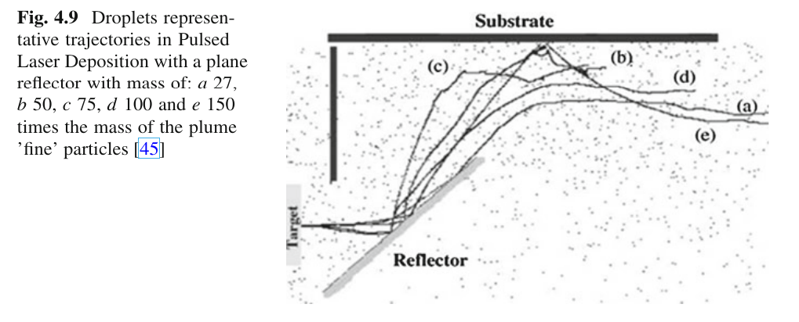
plume particles interaction with reflector
big particles will reach the substrate area much later (microseconds) than the plume fine particles. Solution was to correlate a shutter with the laser pulse and to close it after the first part of the plume, containing the ‘fine’ particles, is passing the shutter
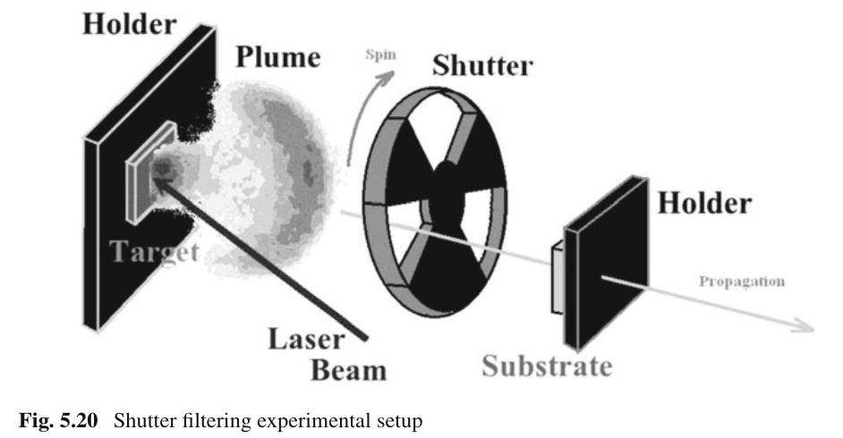
shutter filtering experimental setup
using experimental setups with particular geometries for speculating differences of different particles interactions with obstacles and with each others is
one approach widely use for the plume filtering
axe-off deposition: the base of this technique is the idea that the fine particles of the plume will have a ‘fluid like’ behavior due to interactions with each other and with the ambient gas molecules, while the large (and heavy) particles of the plume will usually have a linear trajectory, due to their mass. Particles could be deposited only by being deviated from their linear trajectories
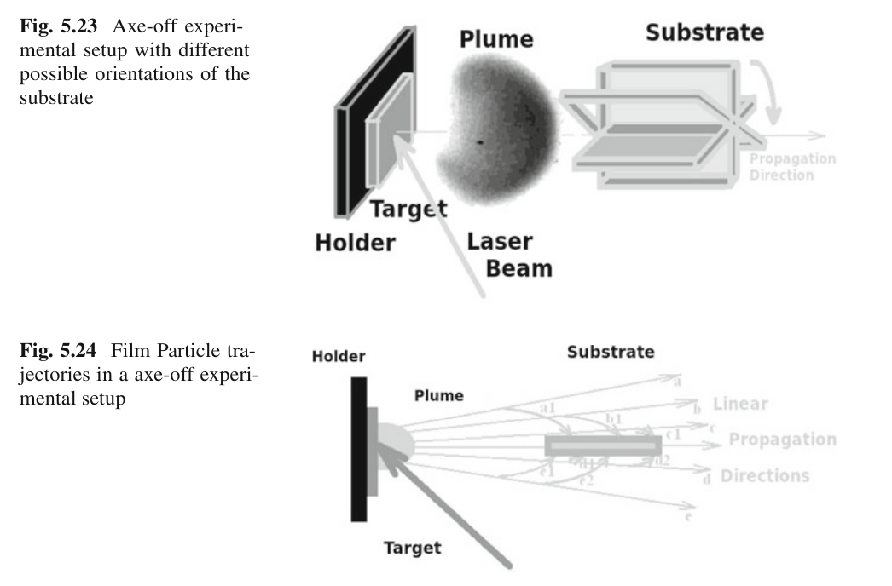
filtering techniques